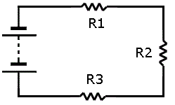
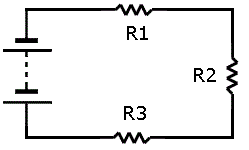

HISTORIAS DE LA VIDA
Por un descuido mi perro casi se muere

Esta es Lily mi perra raza cocker, la rescate de la calle hace 5 años
y desde ese da ha sido mi acompañante y mejor amiga desde ese entonces comparto dia a dia con ella.
Recuerdo aquel dia en que ella casi se muere por un corto circuito en mi casa, para los que no conozcan
que son los circuitos son estos:
Este es un circuito paralelo


Este es un circuito en serie
 

Recuerdo que ese dia me habia levantado tarde para ir a trabajar, lo cual me acelero muchisimo.
Me bañe, me vesti y sali corriendo a parar el bus, fui tan descuidado que deje el microondas prendido,
desgraciadamente ese dia fui tan desfortunado que hubo un corte electrico en mi casa, esto provoco que mi microondas
se encendiera instantaneamente, gracias a Dios, ese dia sali del trabajo temprano, tome el bus y me dejo exactamente en
la entrada de mi casa, al acercarme senti el olor a humo, entre corriendo y vi que parte de la cocina se estaba quemando
y mi perra estaba atrapada entre el fuego, coji el extintor de emergencia y apague el fuego que habia,
de una corri hacia ella, la abraze con todas mis fuerzas y jure siempre ser cuidadoso al salir de mi casa.
Desde ese dia cambie totalmente, senti que Dios me dio la oportunidad de tener a mi perra conmigo,
asi que decidi volverme mas creyente.

Ese dia influyo mucho es mi vida,empeze a salir mas con Lily, la siguiente foto es de una de nuestros viajes: